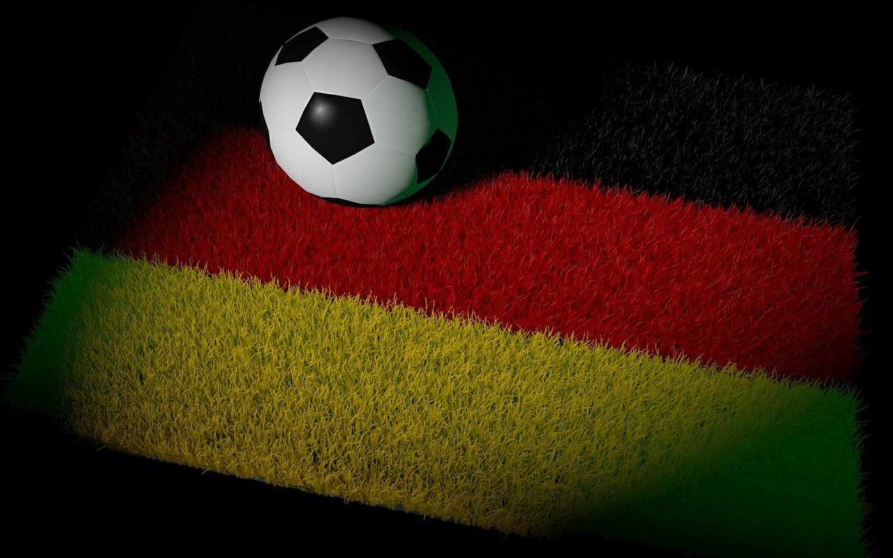
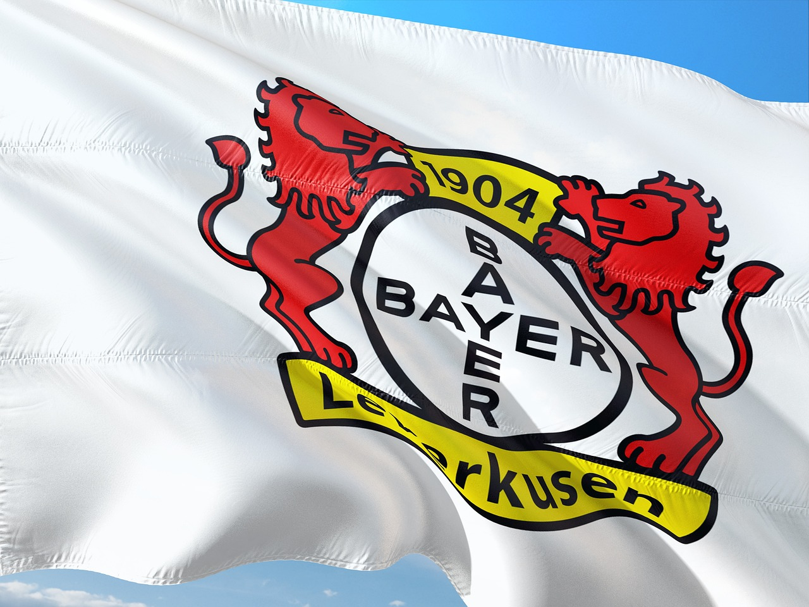
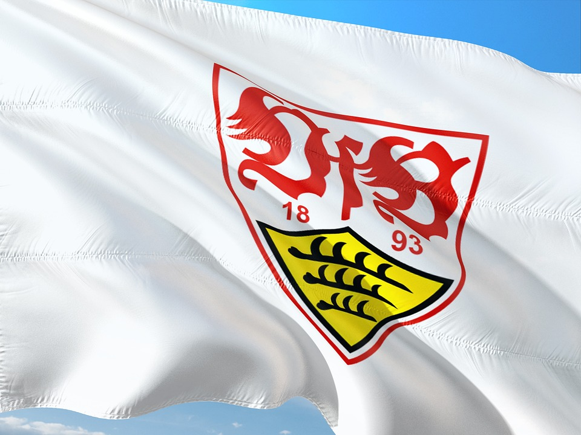

Sarjaa johtaa Bayern Leverkusen, joka on jo varmistanut voiton. Bayern Leverkusen pelaa uskomatonta kautta, koska he eivät ole hävinneet yhtäkään peliä koko kaudella. Bayern Leverkusen ei ole myöskään koskaan aikaisemmin voittanut Bundesliigaa. Bayern Leverkusenissa pelaan suomalainen Lukas Hradecky, joka on joukkueen maalivahti sekä kapteeni. Bayern Munchen on voittanut 11 perättäistä kautta putkeen, joten on myös suuri yllätys tämä Bayern Leverkusenin uskomaton kausi. Bundesliigan maalipörssiä johtaa Bayern Munchenin Harry Kane, joka on tehnyt 35 maalia.
Bayern Leverkusen oli 0-2 häviöllä otteluaan, mutta nousi tasapeliin lisäajan viimeisellä tilaanteella ja jatkavat tappionta putkea. Bochum voitti todella tärkeän pelin, koska he ovat taistelevat putoamisesta. Mainz ja FC Köln pelasivat tasapelin ja molemmat saivat yhden pisteen, mitkä ovat myös tärkeitä putoamisen kannalta.
Frankfurt-Bayern Leverkusen peli ei sinällään ole tärkeä peli, mutta mielenkiintoista nähdä jatkuuko Bayern Leverkusen tappioton putki. Muut pelit ovat todella tärkeitä putoamisen kannalta, sillä kaksi viimeistä joukkuetta putoaa suoraan ja kolmanneksi viimeinen joutuu karsintaa.